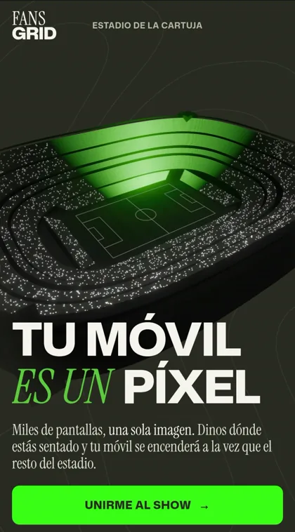
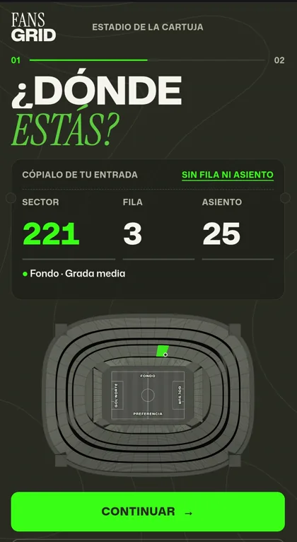
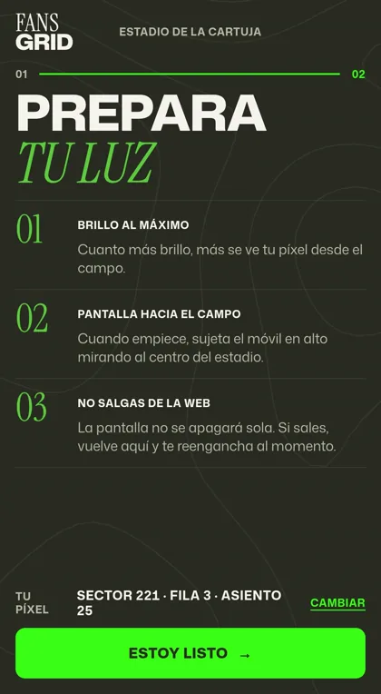
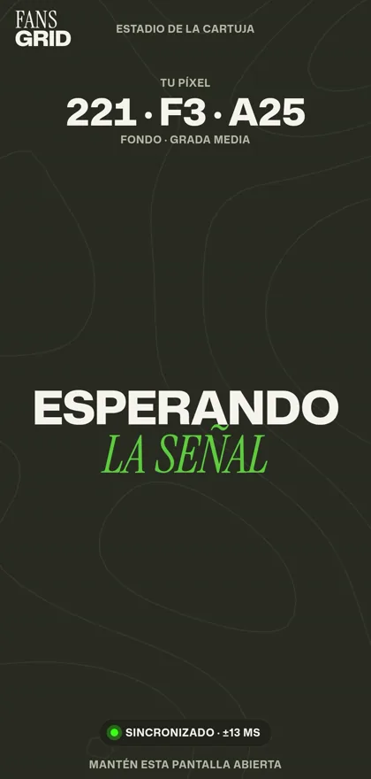
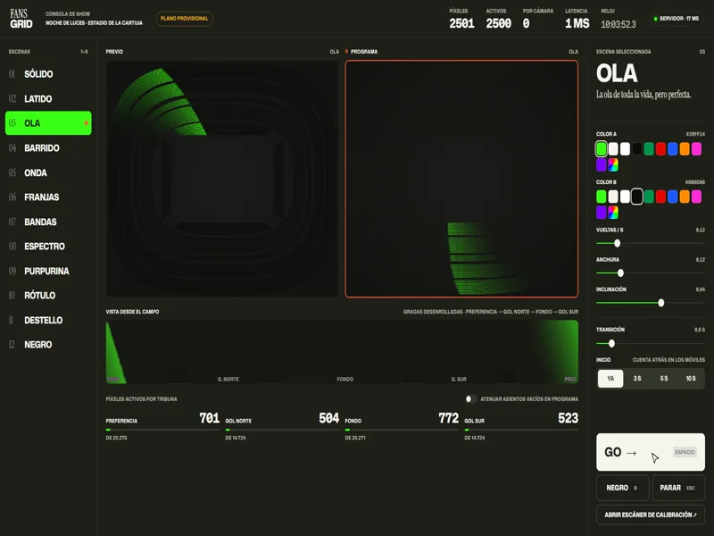
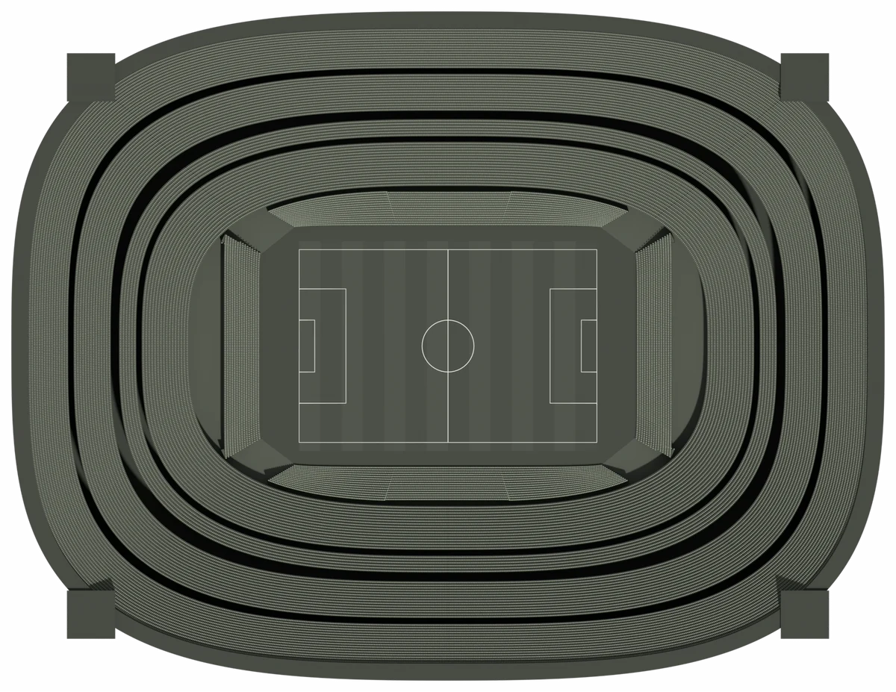

01

Entra al show
Escanea el QR o abre el enlace. Es una web: no hay que instalar nada.
Transforma tu estadio en una pantalla gigante sincronizada. Una solución plug & play para que cada espectador forme parte del show.
Cuatro pasos y la grada se convierte en una pantalla colectiva.

Escanea el QR o abre el enlace. Es una web: no hay que instalar nada.

Preferencia, Fondo, Gol Norte o Gol Sur. Solo eso: no pedimos fila ni asiento.

Pantalla al máximo y mirando al campo. Mantén la web abierta hasta que empiece.

Tu móvil queda sincronizado con el resto del estadio. Cuando arranque el show, todos encienden a la vez.
¿Y la sincronización? Antes del show, los móviles ajustan su reloj con una referencia común. Así, todos cambian de color en el mismo instante, con precisión de milisegundos.
Un recorrido sencillo: entras, te preparas y tu pantalla se enciende con todos.
Una vista para todo el estadio. Cambias la idea y la grada entera responde.

Sin cartulinas ni pulseras: la pantalla ya está en manos de todos.
Desde un solo lugar se prepara y se lanza cada coreografía.
En el prototipo, la herramienta representa la grada entera y permite vestirla de color en directo. Lo que ves aquí es el resultado, no el proceso.
El prototipo se ha desarrollado en La Cartuja; la misma idea funciona en cualquier recinto.
Lo que ves en el render es el resultado visual: la grada entera convirtiéndose en una sola imagen. Nos adaptamos al estadio concreto para dar simulaciones previas.

Estrenemos estadio y estrenemos eventos luminosos.
El nuevo estadio del Real Betis tiene que tener una nueva forma de crear ambiente. Desarrollamos y probamos el concepto en La Cartuja para llegar al Benito Villamarín con una herramienta funcional.
Cuatro personas detrás de esta propuesta.